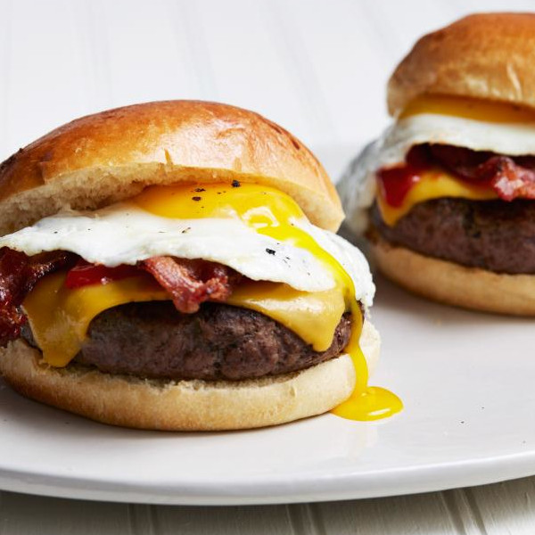

Bacon, Egg, and Cheese Breakfast Burger

Description
Easy to make breakfast burger, consisting of beef patties, eggs, bacons, and cheese slices.
Serving size: 2 people
Estimated time to make: ~40 minutes
Ingredients
- 2 eggs
- 4 slices of bacon
- salt and pepper
- 3/4 pounds 80/20 ground beef
- 2 slices of cheese
- 2 hamburger buns
- 3 tbsp melted butter
Steps
- Preheat the oven to 350 degrees F.
- Shape the ground beef into 2 patties and add salt and pepper.
- Lay the bacon strips over a large skilled and heat the skillet over medium heat.
- Cook the 4 bacon strips for about 4 minutes per side or until brown and crispy.
- Once done, set the bacon aside pour most of the left oil away, leaving a small coating then increase the heat to medium-high.
- Cook the 2 eggs onto the skillet until the whites are settled on each side. Then turn off the heat and put the eggs aside. Add salt and pepper to the eggs as needed.
- Add the patties to the skilled and cook the patties about 4 minutes per side or until brown on the outside and medium rare on the inside.
- Move the cooked patties onto a baking tray and cover the 2 patties with a slice of cheese.
- Add the hamburger buns to the baking tray and add a bit of the melted butter to the inside of the buns. Keep the buns on the baking tray butter side up.
- Place the baking tray with the cooked patties and buttered buns into the oven. Bake the patties for about 3 minutes or until the cheese melts before removing. Bake the buns for about 10 minutes before removing.
- Gather the toasted hamburger buns, and place the patties and 2 slices of bacon,and egg on each bun.
- Serve as is or with ketchup and/or mustard.